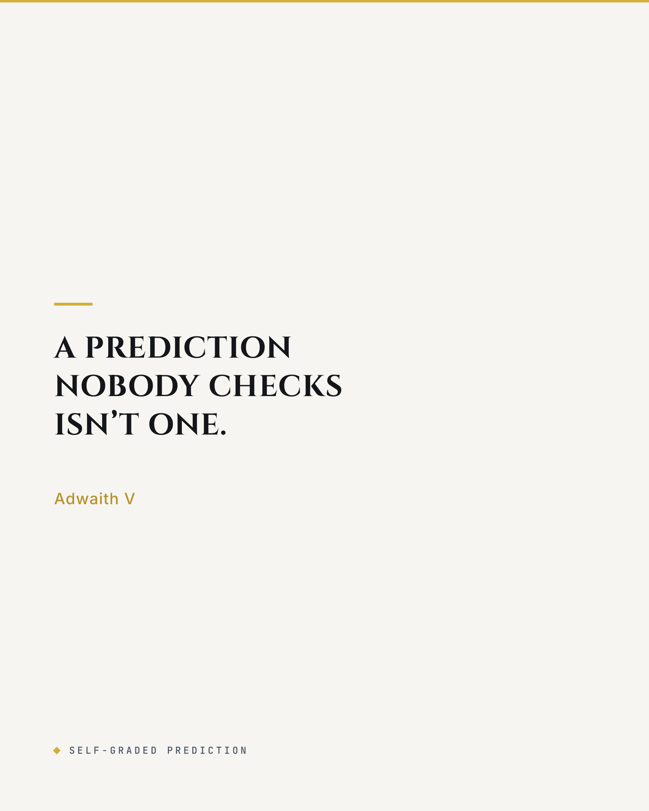

Forecast Scorecard · Warframe: Amir's Shockwave · Digital Extremes
Graded forecast. The prediction was written and archived on 13 July 2026, from Digital Extremes' own TennoCon report. Amir's Shockwave shipped on 12 August. The freshness check ran on 14 August, and this scorecard was published on LinkedIn on 11 September 2026 (original post). The 13 July text sits at the foot of this page, unedited.
The grade
What this is. A pre-launch read of Warframe's August live-ops beat (Amir's Shockwave, plus Fables & Frontiers: Running Late), graded against the shipped patch two days after launch.
What I found. Three of four spine-level claims did not survive the patch notes. All three came from the same place: reading a pre-launch report as if it were the shipped product.
Why it matters. Teardowns are cheap when nobody checks them. Every forecast in this series is dated before launch and graded after it, on the record, whether it held or not.
Pillar 01 · The method
The rule was set before the outcome was known.
The scoring loop
Archived, not edited
The 13 July version stays wrong on the record, on purpose.
Freshness check
Run 14 August 2026, two days after the 12 August launch.
Scored, not softened
Three spine-level errors found and named one by one. Nothing smoothed over.
Kept intact
The archived forecast carries its own do-not-edit rule.
Pillar 02 · The scorecard
Every claim was written before a single player could log in. Every correction comes from Digital Extremes' own patch notes and reward tables.
| Claim | Predicted, 13 July | Shipped, 12 August | Grade |
|---|---|---|---|
| KIM campaign | A six-day time-gate: temporary, gone within a week. | Fables & Frontiers: Running Late shipped as a permanent addition to the KIM system. No time-gate exists. | Miss |
| Nightwave track | A six-day swap of Nora's Nightwave track, a backend season change. | 30 ranks plus 150 prestige ranks: a months-long track, not a swap. | Miss |
| Reward pressure | Flavor-forward: cosmetic, low-pressure by design. | Hard progression goods on a free track: Umbra Forma (R28), Omni Forma (R26), Warframe Slot (R20), Veiled Riven Cipher (R19), Arcane Guardian ×3 (R14), Primary Arcane Adapter (R8). | Miss |
| Load | No Tau-class spike for the August beat; the 157,162 TennoCon peak from July cited for provisioning. | Steam peaked at 56,310 on 13 August: trough-window concurrency, far under the July peak. | HeldNo spike was forecast and none came. The cited figure was July's, stale by August. |
Missed entirely: Nora Night did not host Nightwave, for the first time in seven years. The 13 July read called the change a backend season swap.
Pillar 03 · Why it missed
All three misses were inherited from the source, not introduced in the analysis. That is a sourcing error, and it is fixable.
The source
Every claim came from Digital Extremes' TennoCon report, compiled a month before launch. The report described intent; the patch shipped a decision.
The pattern
Each miss was about how long something ran or how much it paid, not whether it existed. The campaign, the track and the reward table were all real; their duration and weight were not what the report implied.
The consequence
A cosmetic track and a Warframe Slot track need different guardrails. Reading the weight wrong meant the forecast's economy pillar was guarding the wrong risk.
The correction
A live-window teardown written two days after launch superseded the forecast and rebuilt the economy read around the real reward table. The forecast was kept beside it, not replaced.
Pillar 04 · The standard
This is the bar every published teardown in this series is held to before anyone is asked to trust it.
Not hidden
The wrong version stays archived and dated, not quietly edited.
Not hedged
Three misses named one by one, not smoothed into a general disclaimer.
The standard
The same discipline applies to every teardown in the series, including the ones still waiting for launch.
Next check
The Iceblade of Narin read gets the same freshness check after it ships, on the record.
Self-graded prediction · Warframe · Amir's Shockwave
Date it before launch. Grade it after. Publish both.

Archived pre-launch prediction · written 13 July 2026 · kept as written
Takeaway: This layer's job is login rhythm, so instrument streaks and cadence and let the big drops chase the concurrency peaks.
nightwave_daily_challenge_completed streak length - the primary login-frequency signal for a free battle-pass-style track.kim_conversation_node_reached across the six-day KIM campaign - maps where players drop off inside the story track.fables_frontiers_room_entered vs fables_session_repeat_d7 - tells you if the Höllvania Mall tabletop room is a repeatable draw or a one-visit set piece.onlyne_song_running_late_played - light signal on the new On-Lyne track's pull.Takeaway: The report already calls this track "less exploitative," so the economic job is to hold that line while still driving logins.
nightwave_rank_up pace vs challenge availability - catches both grind-wall and trivial-completion extremes.Takeaway: The infrastructure ask is deliberately small, and that is the point - a persistent social room riding existing Höllvania tech.
Takeaway: Success here is a shallower trough between expansions, measured in stickiness rather than a peak this track was never built to hit.
Part of a TennoCon 2026 series. Still waiting to be graded: A rework wins in the loadout, not the patch notes and Instrument the return, not the reveal. The measured teardown behind the series is The Venus Gate.